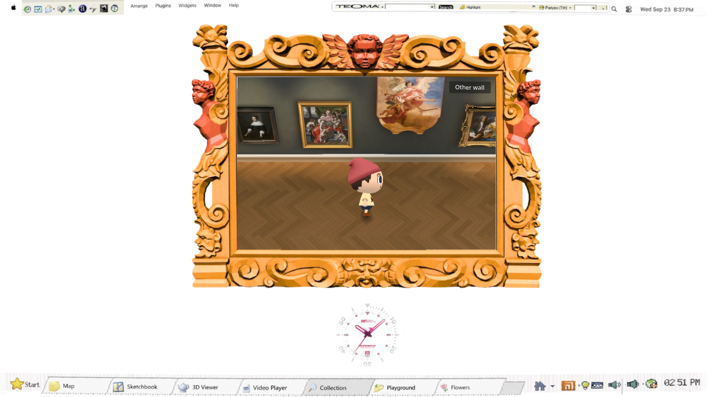
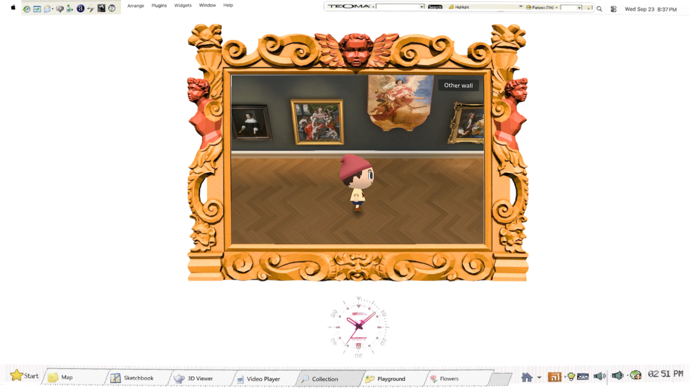
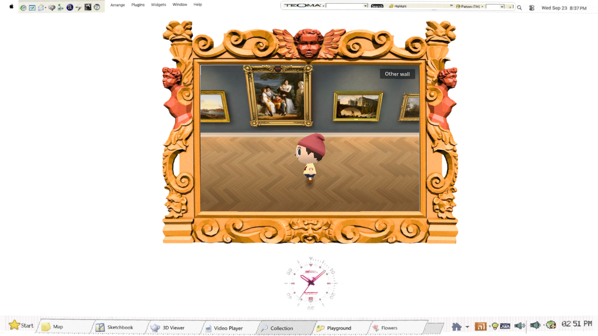

The warm light stays. Repeated pale caps above the paintings are softer. The approved character and its animations are unchanged.
Open the viewer · Verification and limits · Independent review



Native checks passed: both white rooms, 23 paintings, 300 routes, character clips and the final display shader. Actual Chrome export: standing, walking and turning median and p95 both 16.7 ms (~60 fps); all six browser interaction checks passed. Independent review retained the actual export: softer halos, readable ivory faces, warm floor and the accepted visitor preserved. This is a subtle lighting improvement, not an exact-match claim.
Silent browser recording; audio synchronization is not certified.
Browser metrics · Rendered checks · Repository checks · 67 unchanged character files